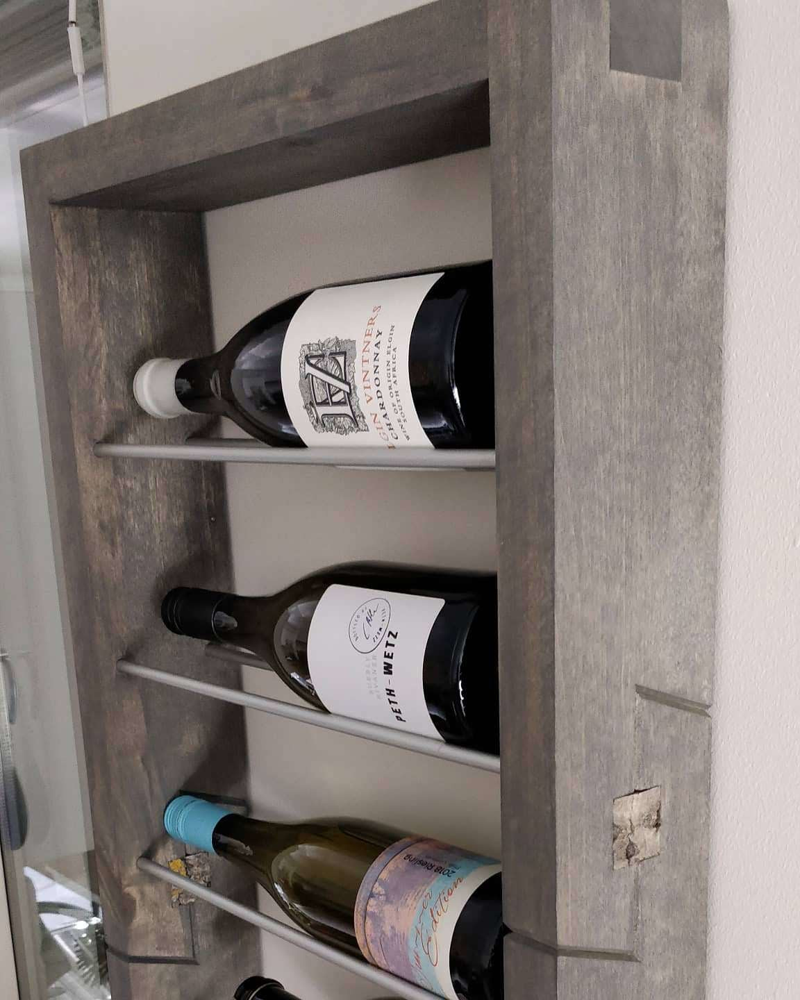
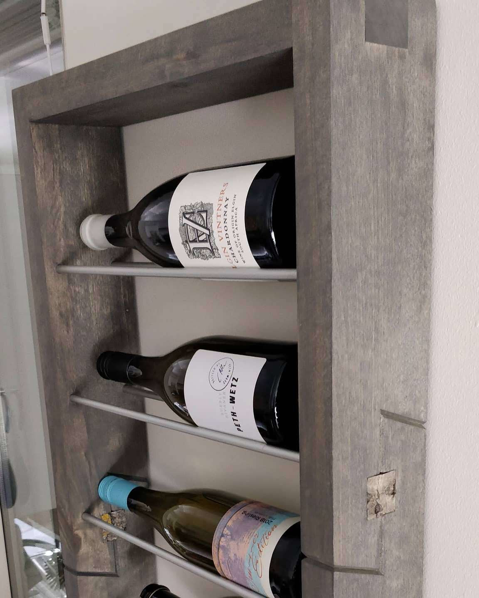
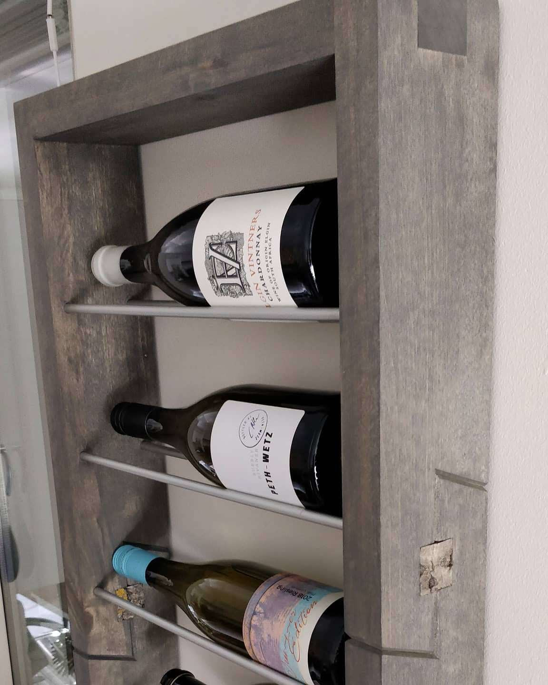
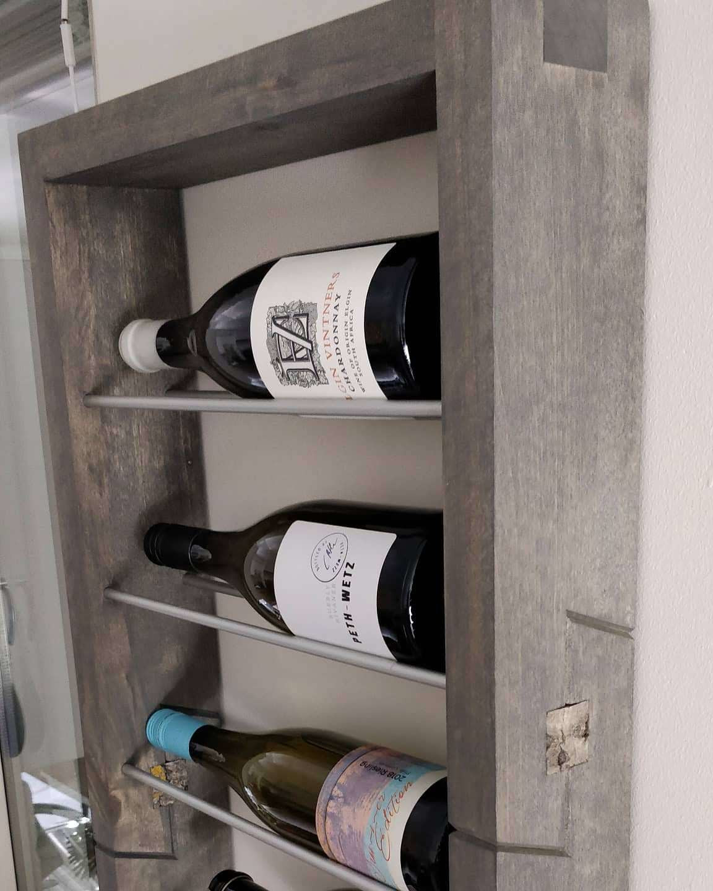

Kuvagaltsu

 



Asettamalla videolle 'muted', 'autoplay' ja 'loop' -atribuutit jolloin
video pyörii automaattisesti taustalla.
<video> autoplay muted loop></video>
Sitten asettamalla videon sijainti kiintesti paikalle ja 100% leveys ja/tai korkeus sekä asettamalla 'z-index: -1;'.
Kalinka audio:
Korvaamalla 'controls'-atribuutti 'autoplay'-atribuutilla, jolloin sivuston kävijän saa viimeistään tässä vaiheessa poistumaan sivuiltasi sadasosasekunnissa (jos selain ei estä äänellistä autoplaytä), vielä kun kaiuttimet on täysillä ja pikainen pohdinta mistä tuo ääni rupesi soimaan :D